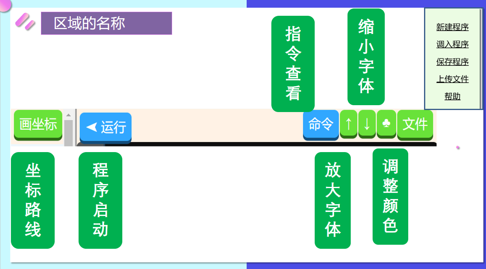
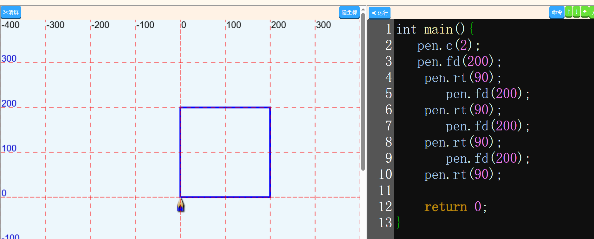
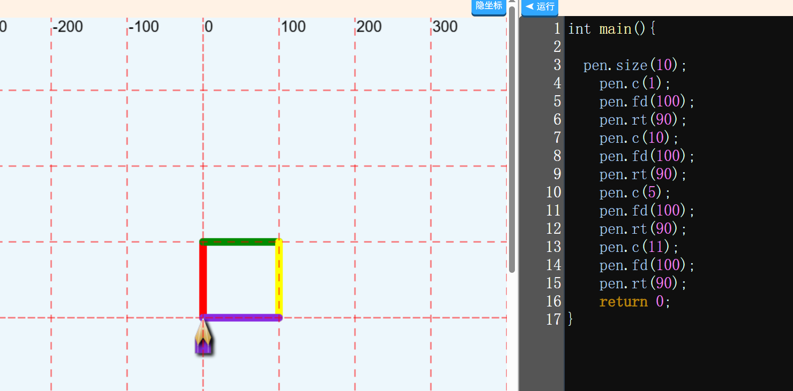
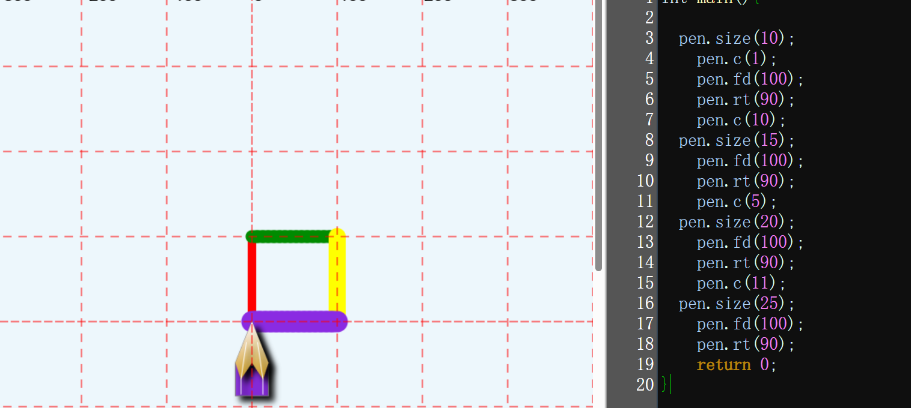

GOC课程 -01 多彩正方形
知识点梳理内容
GOC软件的认识 和 前进指令
- 不同的位置区域名称： 1.显示区， 2 指令区 3. 功能区
-
前进指令：
格式：pen.fd(距离)
特点：
名称：前进
功能：笔向前移动指定长度，以当前颜色画一条直线。
说明：fd 是 forward(前进)的缩写；
数字可为整数或小数。
转弯指令
-
右转弯：
格式：pen.rt( 角度 );
特点：
名称：顺时针旋转
功能：笔的方向在当前位置和方向顺时针旋转指定角度，一周是360度。
说明：所以也称为右转命令；角度可为整数或小数。
样例：pen.rt( 90 );
颜色指令
-
调整颜色：
格式：pen.c(颜色数字);
特点：
名称：颜色调整
功能：绘制不同颜色
说明：颜色使用数字代替，数值1 到15
样例：pen.c( 4); 选取 4号颜色
画笔的粗细
-
粗细指令：
格式：pen.size(粗细)
特点：
名称：粗细
功能：修改画笔的粗细
说明：数字越大 画笔越粗
数字
案例练习模式
配套练习
- 基础语法练习1 ：软件的认识
- 基础语法练习2 ：绘制正方形
- 综合练习3：绘制不同粗细的正方形
软件分区的认识
【题目】软件的每个分区认识

示例2：绘制正方形
【题目】绘制一个蓝色的正方形，粗细默认

示例3：绘制一个不同的颜色的正方形
【题目】绘制一个正方形，四条边的颜色不同

示例3：绘制一个不同的颜色，不同粗细的正方形
【题目】绘制一个不同的颜色，不同粗细的正方形

作业练习参考
作业练习
- 作业练习1 ：绘制领奖台
- 作业练习2：无色五角星 .
作业练习1：绘制领奖台
【题目要求】按照下面的要求，绘制图案

作业练习2：五色五角星
【题目要求】按照下面的要求，绘制图案